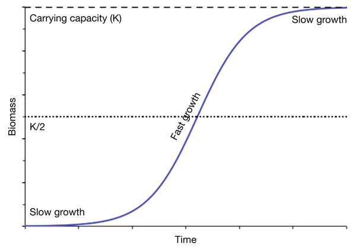
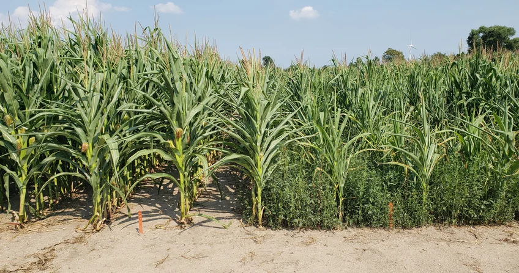
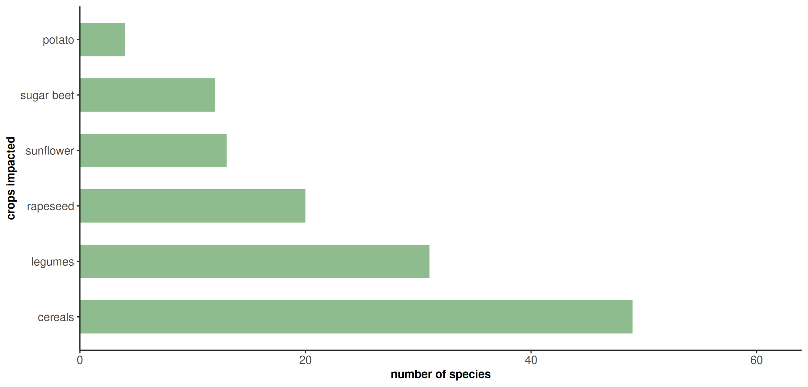
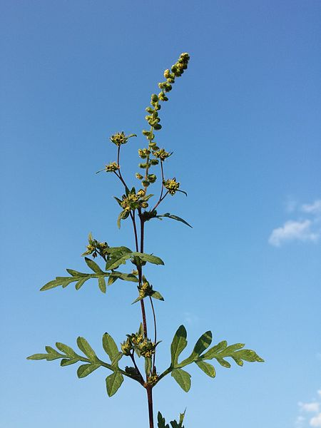
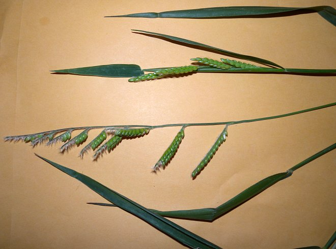
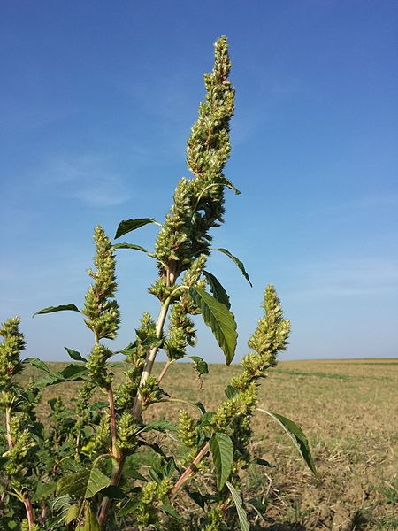
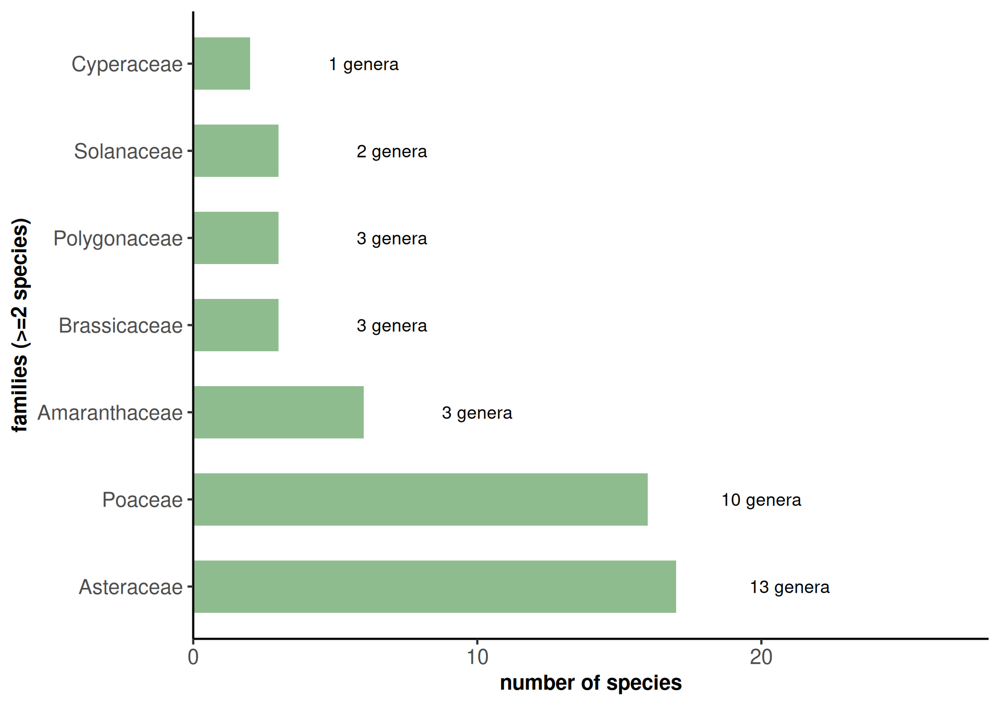
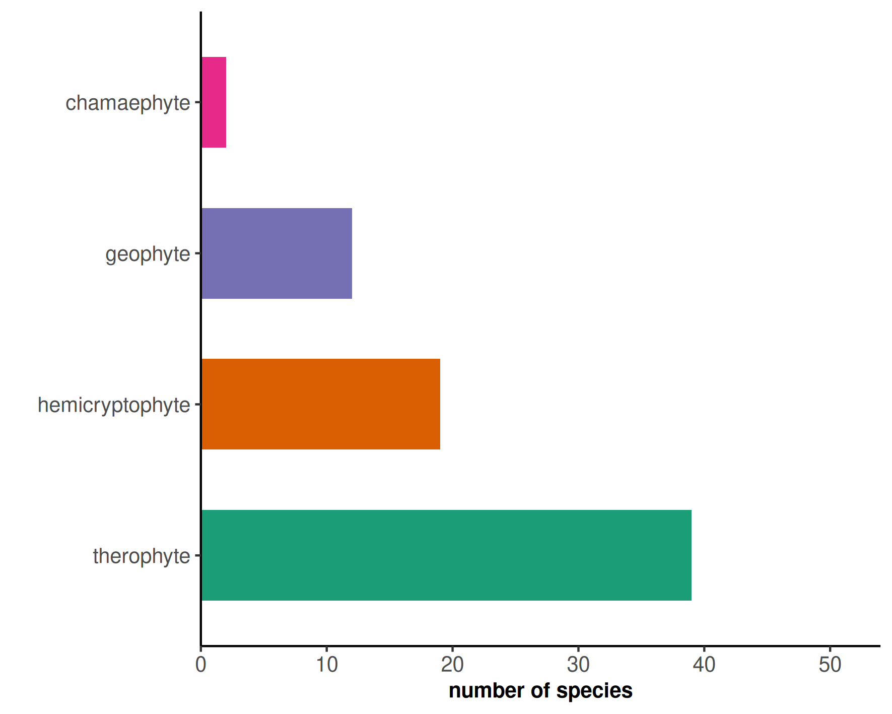
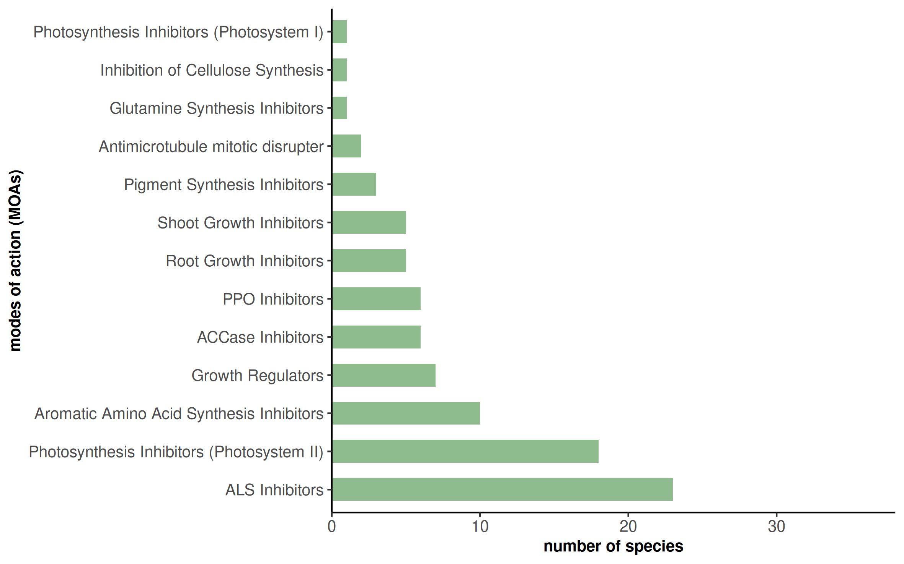
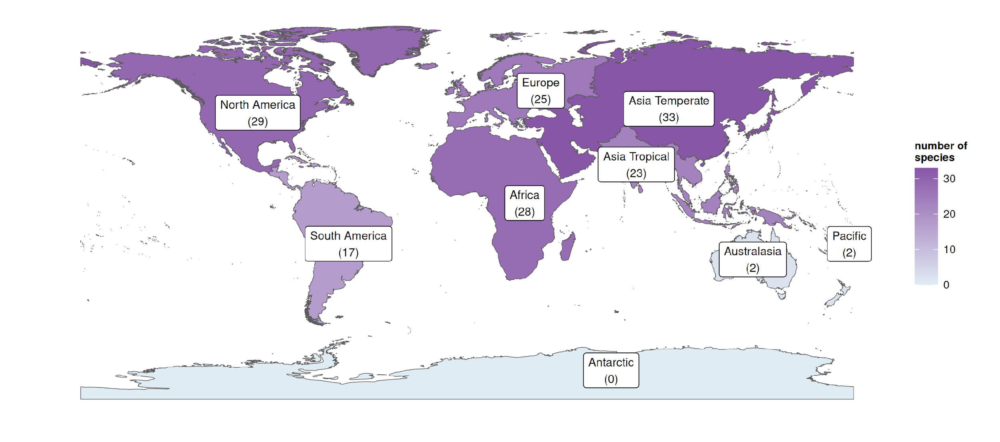

Newly appearing or newly established weed species in a region. They were previously absent, or present only in limited numbers, with a very recent spreadness or with a high potential to spread in the near future. Their occurrence can happen due to various factors, like changes in land use, agricultural practices, environmental conditions or the introduction of invasive plant species from other regions. During the early stages the costs and efforts to manage them can be highly reduced, resulting also in lower economic and ecological impacts.
 In agricultural habitats weeds are one of the main pests. It has been estimated a loss of around 30 billion dollars globally each year, split up between crop yeld losses (competition and/or disease spreadness), human impact (allergies), livestock impact (toxicity) and natural habitats impact (biodiversity loss).

AgriWeedClim aims to identify emerging weeds in Europe, estimate the future suitable areas and the potential impacts and finally to find management methods to reduce their impact. Currently we are at the first stage of data analysis, checking for historical weed community changes and the identification of emerging weed species.
More precisely the aims of my research is to obtain a list of likely emerging weeds, gather and standardize the data on the selected species and finally to get the first conclusions by looking at possible patterns and particular traits.
The species list has been gathered by EPPO lists, Crop vegetation and new records studies. Then for each species, by using a standardized query, I searched in literature the crops impacted and their spreadness from papers and journals, the native distribution from Kew and GBif, their life form from PlaDias and FloraVeg.EU and the herbicide resistance from Weedscience.org.
Based on the info gathered, the species have been then categorized based of the region where their impact or spreadness has been observed:
For example this is a table with a species for each category, showing the data gathered for each of them.
  By a brief analysis of the species with a good likelihood of being or becoming emerging weed species in central europe, it resulted that they are divided in 61 species and 18 families, but more than half of those species are part of either the Asteraceae or Poaceae families.
Most of the crops impacted are of cereals (wheat, maize, oats, etc...) and legumes (soybean, beas and peas).
And as expected, most of the species survive the harsh conditions as seeds (therophytes) and as buds on the soil surface (hemicryptophytes), as these are the typical methods for surviving for annual and bi-annual plants, but also because fields are tipically plowed periodically and it wouldn't permit to underground storage organs (geophytes) to survive. At the same time, is interesting to note that there are also some geophytes as emerging weeds, this could be caused by a recent changing in cultivation methods that don't use anymore soil invertion or plowing.
Almost half of the species are immune to at least one herbicide mode of action, with few of them being resistant to up to 9 different modes. Even for Glyphosate, one of the most used herbicides in the recent years, it has been observed an increased in tolerance among weeds.
Finally I've also created a map with the native continents of the emerging species, showing that the highest number of species comes from Temperate Asia, but there are also fairly high amount of species from Northern America, Africa and Europe itself, that could be explained by the high land surface, similar climates but also from the recent human activities, with economic relationships between Europe and the other continents acting as vectors for their spreadness.
Of course this are only really early results and it's necessary to continue with the research to gather other data about their impacts and possibly to further understand their vectors and how to prevent their diffusion and economic effects, not only in agricultural habitats, but also in human health, natural environments and biodiversity.